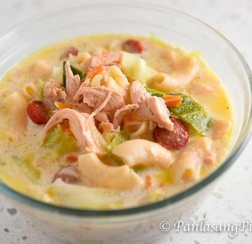

Sopas Recipe

Description:
Sopas is a Filipino macaroni soup made with elbow macaroni, various vegetables, and meat (usually chicken), in a creamy broth with evaporated milk.
Ingredients:
- 1/4 cup STAR MARGARINE GARLIC
- 1 pc onion, chopped
- 1/4 kg elbow macaroni
- 1 pc carrot, peeled and diced
- 2 tbsp patis
- 1/4 tsp pepper
- 6 cups water
- 2 cans PUREFOODS CHICKEN IN BROTH
- 3 pc PUREFOODS TENDER JUICY HOTDOG CLASSIC, sliced into rings
- 100 grams cabbage, chopped
- 1 cup MAGNOLIA FULL CREAM MILK
Procedure:
- Melt margarine in a pan and sauté onion, elbow macaroni and carrot. Season with patis and pepper then add water. Stir continuously until boiling. Lower heat then cover. Simmer until pasta is almost cooked, about 8 minutes.
- Add chicken, hotdog slices, cabbage and milk. Simmer for another 2 minutes. Serve hot.